第 10 讲：角色控制——从 PD 到反馈与平衡
用 PD 伺服驱动角色、分析其稳定性，并用前馈/反馈与轨迹优化让角色跟得上、站得稳
◆ 学完这一讲，你应该能
能写出角色关节 PD 控制律，并解释比例项与微分项各自的作用
能说明 PD 控制的两个典型问题（稳态误差、运动滞后）及其与增益的矛盾
能用半隐式欧拉离散化推导 PD 控制的稳定性条件，并解释仿真步长 h 的影响
能区分前馈控制与反馈控制，并说明开环控制轨迹 + PD 伺服 + 反馈修正的工程流程
能描述轨迹优化的基本形式（目标函数 + 动力学约束）以及无梯度方法（CMA-ES、SAMCON）的适用场景
能解释静态平衡的 CoM 投影/支撑多边形判据，并用 Jacobian 转置把虚拟力映射为关节力矩
核心结论速记
角色关节常用 PD 伺服：τ = k_p(q̄−q) − k_d q̇，用误差驱动关节跟踪目标姿态。
PD 是“基于误差”的控制：重力等持续外力会造成稳态误差，快速参考会造成跟踪滞后。
提高 k_p 能减小误差，但会降低稳定性；稳定性由离散时间步长 h 与增益共同决定，需满足特征值模长 < 1。
Stable PD 通过用更新后的速度计算阻尼项，改善大增益下的稳定性。
前馈控制把动作片段转成开环控制轨迹（目标姿态序列）交给 PD 伺服；反馈控制再根据仿真状态施加修正量。
轨迹优化把“找控制轨迹”写成带动力学约束的优化问题；当梯度不可靠时用无梯度方法（CMA-ES、SAMCON）。
静态平衡的简单策略：让 CoM 投影靠近支撑多边形中心，用 PD 计算虚拟力，再经 Jacobian 转置映射为关节力矩。
011. 用 PD 伺服驱动角色关节
角色动画里，我们通常不直接指定每个关节的力矩，而是给每个关节一个目标姿态，让控制器去追。最常用的就是 PD 控制（比例-微分控制）：
\[ \tau = k_p(\bar{q} - q) - k_d \dot{q} \]
其中 \(\bar{q}\) 是目标关节角，\(q\) 是当前关节角，\(\dot{q}\) 是当前关节角速度，\(k_p\) 是比例增益，\(k_d\) 是微分增益，\(\tau\) 是输出的关节力矩。
直觉上：
- 比例项 \(k_p(\bar{q}-q)\)：离目标越远，推得越用力，像一根弹簧把关节拉向目标。
- 微分项 \(-k_d\dot{q}\)：速度越快，反向阻尼越大，像减震器，防止冲过头。
所以 PD 控制可以理解成“弹簧 + 阻尼”的伺服。它不需要知道重力、接触力等复杂动力学，只根据当前误差和速度就能算出力矩，非常适合游戏里实时驱动角色。
在角色动画管线中，PD 伺服通常作为最底层的执行器：上层给出一串目标姿态（来自动捕、关键帧或优化结果），PD 负责让仿真角色尽量跟上。
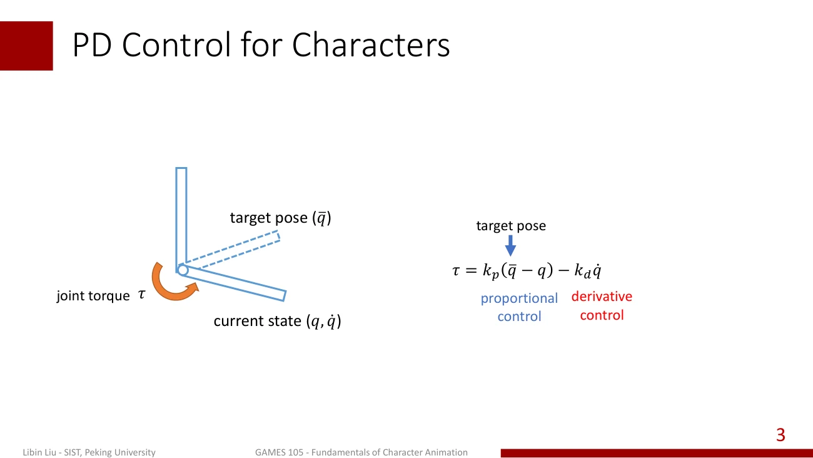
常见坑
把目标姿态当成“直接设置关节角” → 仿真中关节有惯性，直接设角度会跳变 → 应通过 PD 力矩驱动，让物理引擎积分。
k_d 设成 0 → 关节像无阻尼弹簧，会持续振荡 → 至少给一个与 k_p 匹配的阻尼。
UE / Unity 落地
UE 的物理约束（Physics Constraint）有 Angular Drive，可设 Position Strength / Velocity Strength，本质就是 PD 的 k_p / k_d。
Unity 的 Configurable Joint 的 targetRotation + positionSpring/damper 也是 PD 伺服；CharacterJoint 的 swing/twist 限制配合驱动使用。
单关节 PD 力矩计算（cpp）
float tau = kp * (q_target - q) - kd * qd;022. PD 控制的两个典型问题：稳态误差与跟踪滞后
PD 只根据误差算力矩，这带来两个工程上很常见的问题。
（1）稳态误差 如果关节上持续有外力（比如重力），PD 必须保留一个非零误差才能产生足以对抗重力的力矩。平衡时 \(k_p(\bar{q}-q) = \tau_{\text{gravity}}\)，所以 \(q\) 永远到不了 \(\bar{q}\)。课件里那条“手臂在重力下永远到不了目标角度”就是这个现象。
（2）运动滞后 当目标姿态随时间快速变化时，PD 的输出总是“追着误差跑”，实际轨迹会落后于参考轨迹。参考变化越快、增益越低，滞后越明显。
增益的两难
- 增大 \(k_p\) 可以减小稳态误差、让跟踪更紧；
- 但增益越大，系统越容易振荡甚至发散，稳定性变差；
- 轻的身体需要较小的增益，动态动作需要较大的增益——课件也提到“确定增益和阻尼系数并不容易”。
一个经验起点是给 50kg 的角色设置一组典型增益（课件给出数量级），但实际项目必须结合仿真步长、质量分布和动作幅度调参。
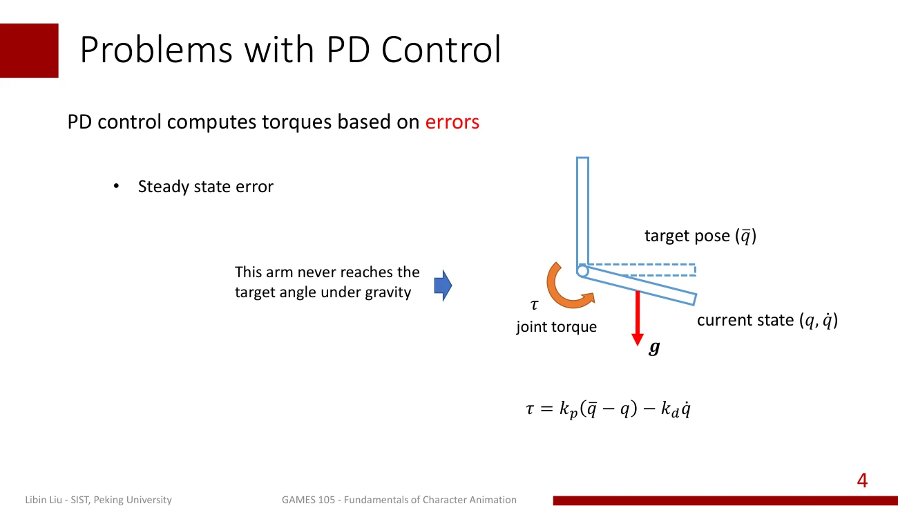
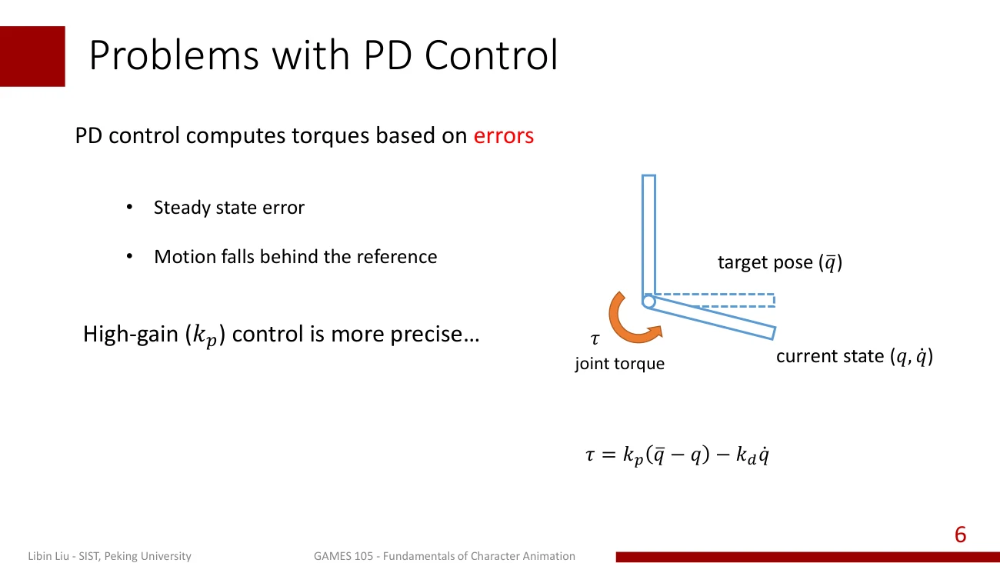
补充说明
课件中典型增益的具体数值以幻灯片为准，这里只强调数量级与调参思路。
常见坑
只调 k_p 不调 k_d → 高增益下振荡 → 同时提高 k_d 增加阻尼，并检查仿真步长。
不同质量的角色复用同一组增益 → 轻角色抖动、重角色软绵绵 → 按质量/惯量缩放增益，或使用 Stable PD。
UE / Unity 落地
UE 物理约束的 Drive 若出现抖动，可降低 Position Strength 或提高 Velocity Strength/Damping。
Unity Configurable Joint 的 positionSpring 过大而 damper 过小会导致抖动，需成对调整。
033. PD 控制的稳定性：离散化后看特征值
为什么增益太大会不稳定？因为仿真不是连续的，而是按固定步长 \(h\) 离散积分。课件用最简单的质量-弹簧-阻尼系统来分析：
\[ m\ddot{x} = -k_p x - k_d \dot{x} \]
采用半隐式欧拉（先更新速度，再用新速度更新位置）：
\[ v_{n+1} = v_n + h\frac{f}{m},\qquad x_{n+1} = x_n + h v_{n+1} \]
代入 \(f = -k_p x_n - k_d v_n\)，整理成矩阵形式：
\[ \begin{bmatrix} v_{n+1} \\ x_{n+1} \end{bmatrix} = A \begin{bmatrix} v_n \\ x_n \end{bmatrix} \]
其中 \(A\) 的元素由 \(h, k_p, k_d, m\) 组成。系统的状态按 \(A^n\) 演化，设 \(A\) 的特征值为 \(\lambda_1, \lambda_2\)（可能是复数），则只要某个 \(|\lambda_i| > 1\)，状态就会发散，系统不稳定。
结论：稳定性不是只看 \(k_p\)，而是 \(k_p, k_d, h, m\) 四者共同决定。步长 \(h\) 越大，稳定区域越小；这就是为什么游戏里物理帧率太低时，同样的 PD 参数会抖。
课件的推导还给出了稳定条件的表达式（特征值模长小于 1 的不等式），工程上可以据此反推最大允许增益或最大步长。
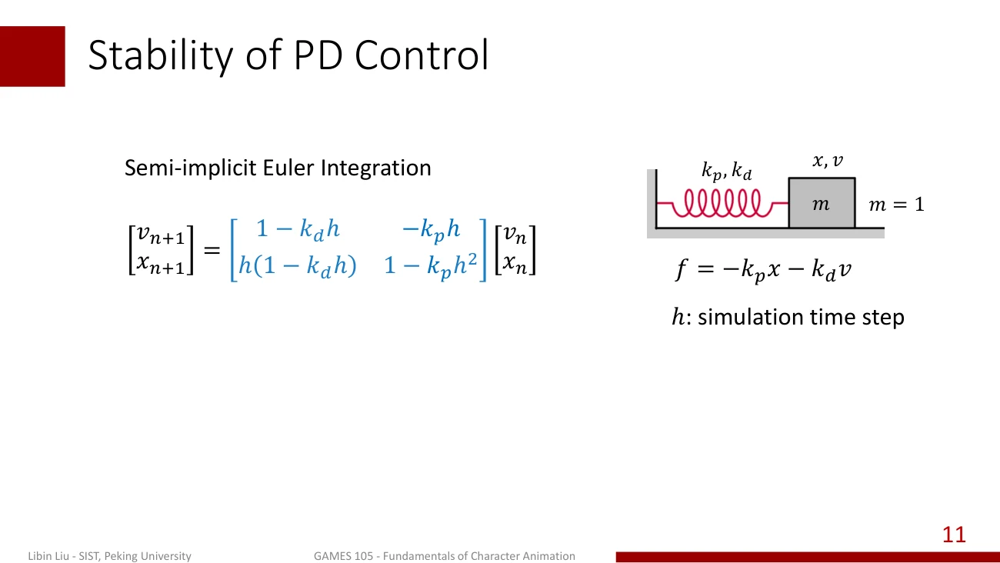
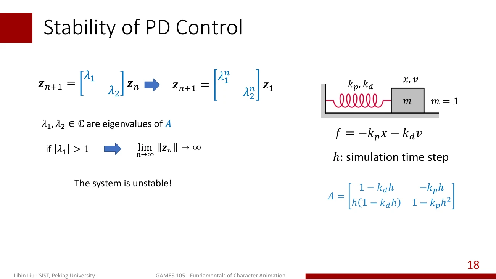
补充说明
课件中 A 的具体元素与稳定条件不等式以幻灯片为准，这里给出推导思路与结论。
常见坑
物理步长 h 改小后仍沿用旧增益 → 系统变得过阻尼、动作发软 → 增益应随 h 重新标定。
只检查连续系统的阻尼比 → 离散后可能仍不稳定 → 必须按离散特征值判断。
UE / Unity 落地
UE 的物理子步（Substepping）会改变有效 h，开启后需重新调 Drive 参数。
Unity 的 Fixed Timestep 决定 h，改 Time.fixedDeltaTime 后关节驱动参数要复核。
044. Stable PD：用更新后的速度做阻尼
既然不稳定来自离散化，一个自然的改进是：阻尼项不要用旧速度 \(v_n\)，而用更新后的速度 \(v_{n+1}\)。这就是 Stable PD 的核心思想。
普通 PD 的半隐式欧拉： \[ v_{n+1} = v_n + h(-k_p x_n - k_d v_n) \]
Stable PD 改为： \[ v_{n+1} = v_n + h(-k_p x_n - k_d v_{n+1}) \]
把含 \(v_{n+1}\) 的项移到左边，可以解出 \(v_{n+1}\) 的显式表达式，再更新位置。这样做相当于在离散层面“预阻尼”，允许使用更大的 \(k_p\) 而不发散。
直观理解：普通 PD 的阻尼总是慢半拍（用旧速度），高速时容易过冲；Stable PD 用即将到来的速度做阻尼，反应更及时，因此更稳。
课件还提到，Stable PD 在动捕跟踪（如 SAMCON）中很常用，因为它能在较大增益下保持稳定，从而更精确地跟踪参考动作。
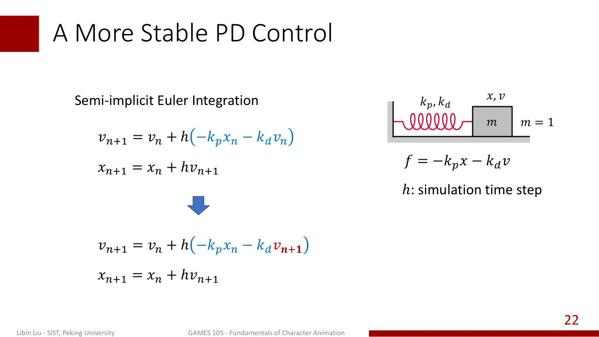
常见坑
以为 Stable PD 可以无限增大增益 → 它只是扩大了稳定域，仍有上限 → 仍需结合步长和任务调参。
实现时忘记把 v_{n+1} 移到左边求解 → 代码里出现隐式方程未解 → 按课件公式显式解出再更新。
UE / Unity 落地
UE/Unity 内置关节驱动不一定暴露 Stable PD，若需要可在自定义物理或动画节点中实现。
概念对应：物理引擎里的“隐式阻尼”选项与 Stable PD 思路相近。
055. 前馈与反馈：开环控制轨迹 + 在线修正
有了稳定的 PD 伺服，接下来要解决“让角色做动作”的问题。课件把控制分成两层：
前馈控制（Feedforward Control） 把一段动作片段（动捕或关键帧）转换成每个控制周期 \(\delta t\) 的目标姿态序列，作为开环控制轨迹 \(\hat{m}\) 送给 PD 伺服。PD 伺服再驱动仿真器。前馈不关心仿真状态，只按预定计划发目标。
反馈控制（Feedback Control） 仿真状态 \(s\) 会因扰动偏离参考。反馈控制器根据当前状态 \(s\) 计算一个修正量（corrective offset），叠加到目标姿态上，形成反馈动作 \(a = \pi(s)\)。这样即使有扰动，角色也能拉回来。
工程上常见的结构是：
- 离线把动作片段转成开环目标轨迹；
- 运行时 PD 伺服跟踪目标；
- 反馈策略根据状态偏差在线修正目标或力矩。
课件中的 SAMCON 就是“采样 + 仿真 + 选择”的序列蒙特卡洛方法：在每个时间窗口内采样多组 PD 目标，仿真后选最优的，逐步构造出开环控制轨迹。
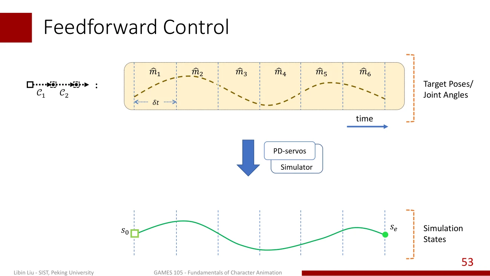
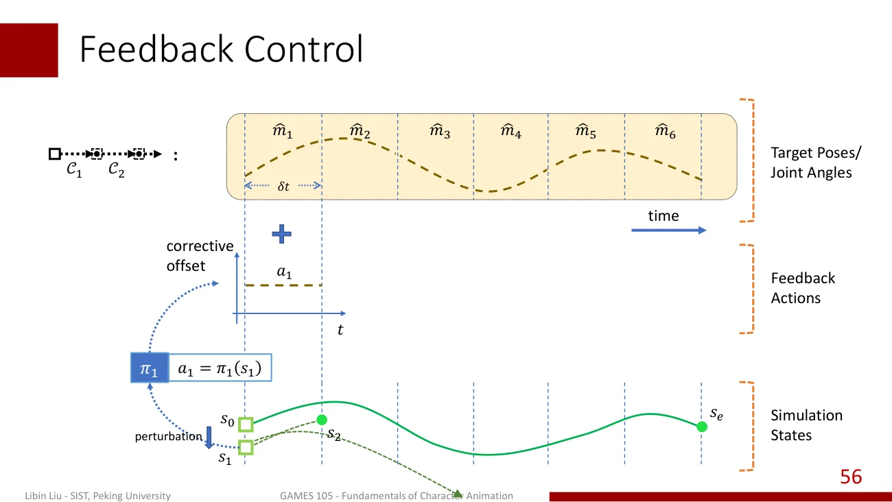
常见坑
只有前馈没有反馈 → 遇到扰动角色会越走越偏 → 至少加一个简单的状态反馈修正。
反馈修正量过大 → 与 PD 伺服打架、抖动 → 限制修正幅度并调低反馈增益。
UE / Unity 落地
UE 的 AnimBP 里可以用“目标姿态 + 物理驱动”的方式对应前馈；反馈可用 Control Rig 根据物理状态修正目标。
Unity 的 Animation Rigging 可在运行时根据状态修正骨骼目标，类似反馈层。
066. 轨迹优化：把“找控制”写成优化问题
如果希望角色完成复杂动作（跳跃、翻滚、带接触的动作），手工调 PD 目标很困难。轨迹优化把这件事形式化：
寻找状态轨迹 \(s_0, s_1, \dots, s_T\) 和控制轨迹 \(a_0, a_1, \dots, a_{T-1}\)，使得目标函数最小：
\[ \min_{s_t, a_t} f(s_T) + \sum_{t=0}^{T-1} f(s_t, a_t) \]
并满足动力学约束（如 \(M\dot{v} + C(x,v) = \dots\)）以及接触、关节限位等约束。
课件用一个极简例子说明：给定目标轨迹 \(\bar{x}(t)\)，希望仿真轨迹 \(x(t)\) 是正弦曲线，于是把“目标高度序列 \(\bar{x}_n\)”也作为优化变量，约束是 PD 仿真的离散更新式。这样问题就变成：找一串目标高度，使得仿真结果接近期望。
约束的处理：硬约束（必须满足的动力学）和软约束（用权重 \(w\) 惩罚的偏差）可以互相转换。
求解方法：梯度下降、牛顿法等基于梯度的方法；也可以用配点法（collocation）把变量参数化为曲线。但课件指出，这类问题高度非线性，梯度不可靠，甚至系统是黑箱，因此实践中常用无梯度优化。
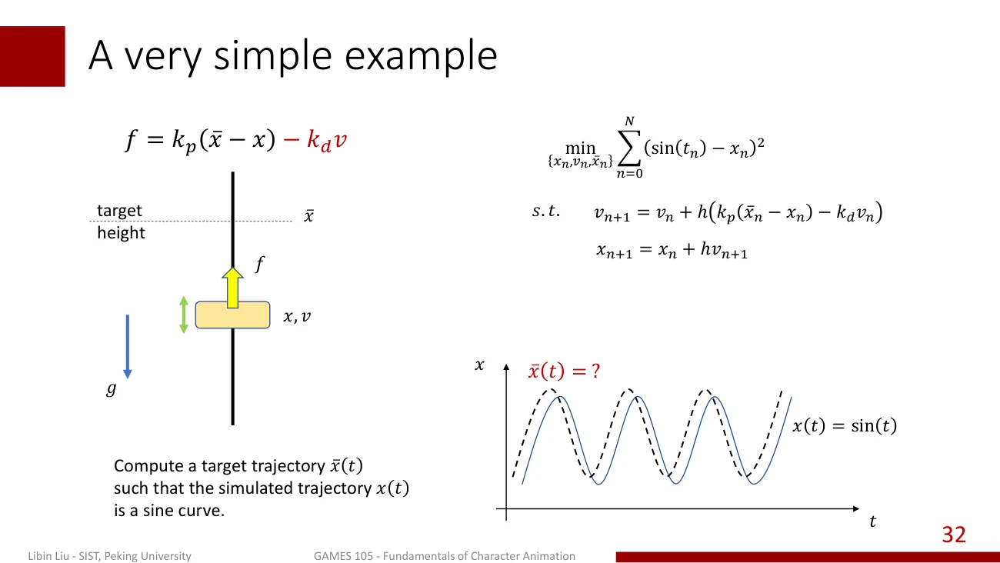
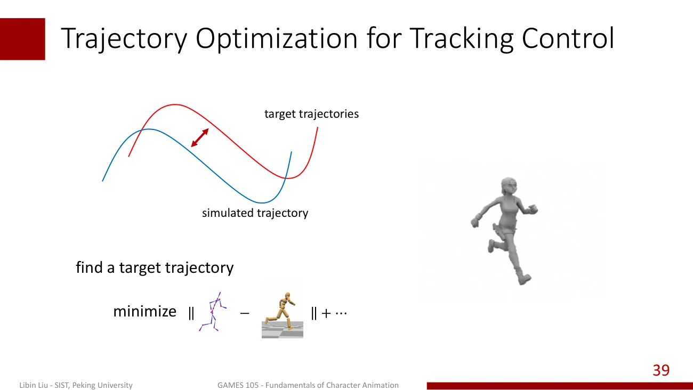
常见坑
直接对黑箱仿真用有限差分求梯度 → 噪声大、代价高 → 改用无梯度方法或可微仿真。
硬约束过多导致问题不可行 → 适当放宽为软约束并给权重。
UE / Unity 落地
UE/Unity 本身不内置轨迹优化，通常在离线工具（Python/MATLAB）中求解，再把结果烘焙成动画或控制轨迹。
077. 无梯度优化：CMA-ES 与 SAMCON
当梯度不可用或不可靠时，用无梯度优化（Derivative-Free Optimization）。基本迭代框架是：
- 给一个初始猜测 \(x\)；
- 根据当前 \(x\) 提出一组候选 \(x_i\)；
- 评估目标函数 \(f(x_i)\)；
- 根据评估结果更新 \(x\)，重复。
CMA-ES（协方差矩阵自适应进化策略） 是角色动画里广泛使用的无梯度方法：它维护一个高斯分布 \(\mathcal{N}(\mu, \Sigma)\)，每轮采样候选、按目标值择优，再更新均值与协方差，使采样逐渐集中到最优区域。课件展示了用 CMA-ES 优化动物步态和全身复杂接触动作的例子。
SAMCON（采样式运动控制） 是另一种序列蒙特卡洛方法：把动作片段转成开环控制轨迹，在每个时间窗口 \(\delta t\) 内采样多组 PD 目标，仿真后选择最优的一组，逐步向前构造整条控制轨迹。它把“采样 + 仿真 + 选择”串起来，适合高维、带接触的角色控制。
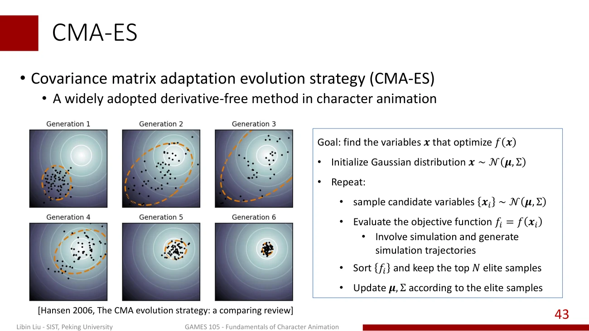
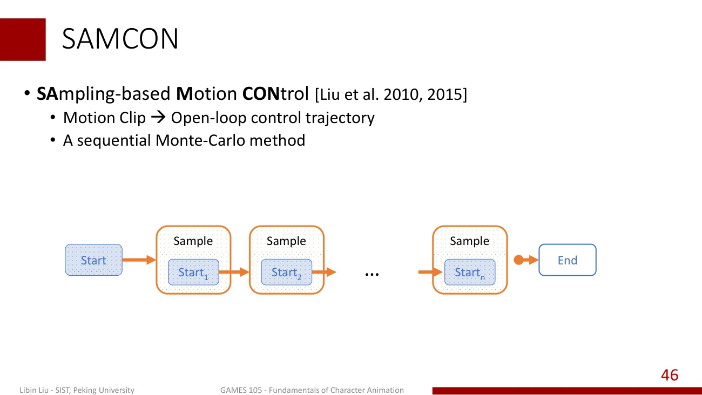
常见坑
候选采样太少 → 优化结果方差大 → 增加样本数或多次重启。
目标函数设计不合理 → 优化出“作弊”动作 → 加入正则项和物理合理性约束。
UE / Unity 落地
CMA-ES/SAMCON 通常在离线 Python 工具中运行，结果导出为动画或控制参数供引擎使用。
088. 静态平衡：CoM 投影、支撑多边形与 Jacobian 转置
角色站着不动时也要保持平衡。课件给出一个简单策略：
判据：把质心（CoM）投影到地面，若投影落在支撑多边形（Support Polygon）内，角色就是静态稳定的。支撑多边形是脚与地面接触点围成的区域。
控制策略：在跟踪站立姿态的同时，让 CoM 投影尽量靠近支撑多边形的中心。用 PD 计算一个“虚拟力”：
\[ f = k_p(\bar{c} - c) - k_d \dot{c} \]
其中 \(\bar{c}\) 是期望 CoM 位置（支撑多边形中心），\(c\) 是当前 CoM，\(\dot{c}\) 是 CoM 速度。
如何把虚拟力变成关节力矩？ 用 Jacobian 转置控制：
- 希望虚拟力 \(f\) 与关节力矩 \(\tau\) 做相同的功率：\(f^T \dot{x} = \tau^T \dot{\theta}\)；
- 由正运动学 \(x = g(\theta)\) 得 \(\dot{x} = J\dot{\theta}\)，\(J = \partial g / \partial \theta\)；
- 代入得 \(f^T J \dot{\theta} = \tau^T \dot{\theta}\)，因此 \(\tau = J^T f\)。
对于转动关节，Jacobian 的列可以用 \(a_i \times r_i\) 计算（\(a_i\) 是关节轴，\(r_i\) 是从关节到作用点的向量），所以每个关节的力矩是 \(\tau_i = (x - p_i) \times f\)。
更高级的策略（如 Macchietto et al. 2009）会把动捕跟踪、CoM 位置/动量、角动量一起写成目标函数，求解单步优化来得到关节力矩。
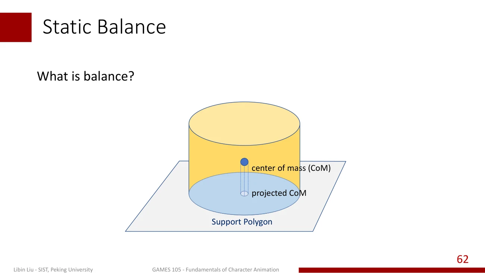
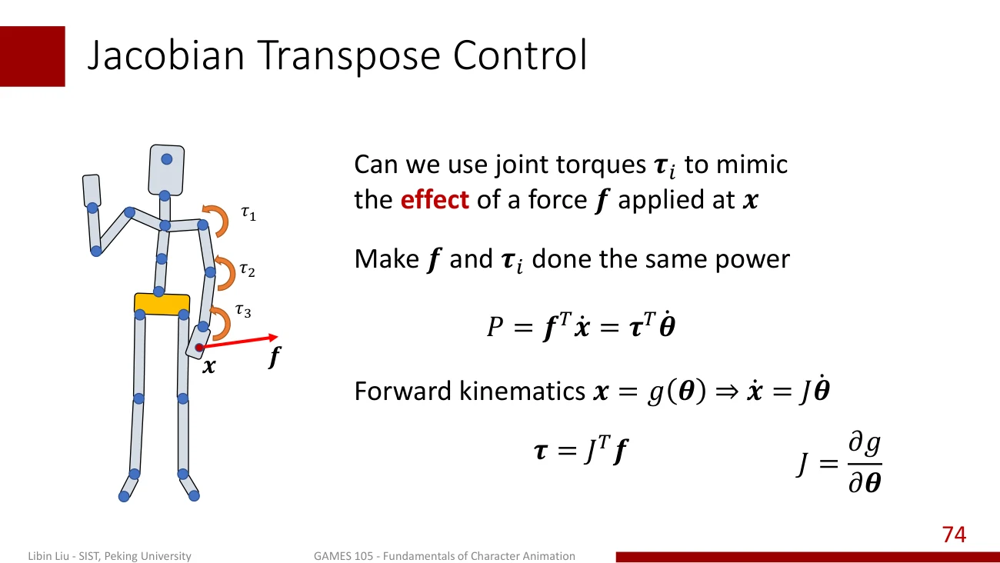
补充说明
课件中 \(\tau_i = (x - p_i) \times f\) 的推导基于转动关节的几何 Jacobian。
常见坑
只控制 CoM 位置不控制速度 → 角色会来回晃 → PD 里保留微分项 \(-k_d\dot{c}\)。
Jacobian 用错坐标系 → 力矩方向错误 → 确保 \(f\)、\(x\)、\(p_i\) 在同一坐标系下计算。
UE / Unity 落地
UE 的 Control Rig 可以读取骨骼位置计算 CoM，再通过物理驱动施加力矩。
Unity 的 Rigidbody 可在脚部施加力/力矩，配合脚本实现 CoM 平衡控制。
引擎对照表
| 概念 / 效果 | Unreal Engine | Unity |
|---|---|---|
PD 关节伺服 | Physics Constraint 的 Angular Drive（Position/Velocity Strength） | Configurable Joint 的 targetRotation + positionSpring/damper |
物理步长影响稳定性 | Physics Substepping / 固定物理帧率 | Time.fixedDeltaTime / Fixed Timestep |
前馈目标姿态 | AnimBP 输出目标姿态 + 物理驱动 | Animation Rigging 设置目标 |
反馈修正 | Control Rig 根据状态修正骨骼目标 | 脚本读取 Rigidbody 状态修正 Animator 目标 |
质心与支撑多边形 | Control Rig 计算骨骼质心，脚部接触点围成支撑多边形 | 脚本计算 Rigidbody 质心与脚部接触点 |
Jacobian 转置力矩 | 自定义物理节点/Control Rig 计算 Jᵀf | 脚本计算 Jacobian 并施加力矩 |
术语双语表
| English | 中文 | 说明 |
|---|---|---|
| PD Control | 比例-微分控制 | 根据目标与当前状态的误差及速度计算力矩的伺服控制。 |
| Steady-State Error | 稳态误差 | 持续外力下 PD 无法完全消除的残余偏差。 |
| Semi-implicit Euler | 半隐式欧拉 | 先更新速度再用新速度更新位置的积分方法。 |
| Stable PD | 稳定 PD | 用更新后的速度计算阻尼项，扩大稳定域的 PD 变体。 |
| Feedforward Control | 前馈控制 | 按预定目标轨迹驱动，不依赖状态反馈。 |
| Feedback Control | 反馈控制 | 根据仿真状态计算修正量，抵消扰动。 |
| Trajectory Optimization | 轨迹优化 | 在动力学约束下寻找最优状态/控制轨迹。 |
| CMA-ES | 协方差矩阵自适应进化策略 | 广泛使用的无梯度优化方法。 |
| SAMCON | 采样式运动控制 | 序列蒙特卡洛方法，逐段采样并选择 PD 目标。 |
| Jacobian Transpose | Jacobian 转置控制 | 用 τ = Jᵀf 把虚拟力映射为关节力矩。 |
课后练习
01 写出角色单关节 PD 控制律，并说明 k_p 和 k_d 分别起什么作用。
查看答案
提示：
从弹簧-阻尼类比出发。
τ = k_p(q̄−q) − k_d q̇。k_p 是比例增益，误差越大输出力矩越大，像弹簧把关节拉向目标；k_d 是微分增益，速度越大反向阻尼越大，像减震器防止过冲。
02 为什么 PD 控制在重力下存在稳态误差？如何减小它？
查看答案
提示：
平衡时力矩必须抵消重力。
平衡时 k_p(q̄−q) 必须等于重力力矩，因此 q 与 q̄ 之间必然保留非零误差。增大 k_p 可以减小误差，但会降低稳定性；也可用前馈补偿重力或 Stable PD。
03 用半隐式欧拉离散化 PD 系统，说明稳定性由哪些量决定。
查看答案
提示：
写出 v_{n+1} 和 x_{n+1} 的更新式，整理成矩阵。
v_{n+1}=v_n+h(−k_p x_n−k_d v_n)/m，x_{n+1}=x_n+h v_{n+1}。写成 s_{n+1}=A s_n，稳定性由 A 的特征值模长是否小于 1 决定，而 A 的元素由 h、k_p、k_d、m 共同决定。步长 h 越大，稳定域越小。
04 解释前馈控制和反馈控制的分工，并说明为什么工程上通常两者都要。
查看答案
提示：
前馈按计划走，反馈纠偏。
前馈把动作片段转成开环目标姿态序列，交给 PD 伺服跟踪；反馈根据仿真状态计算修正量，抵消扰动和模型误差。只有前馈会因扰动累积偏差，只有反馈难以精确复现复杂动作，所以两者结合。
05 给定虚拟力 f 和关节位置 p_i、作用点 x，写出用 Jacobian 转置把 f 映射为关节力矩的公式，并说明推导依据。
查看答案
提示：
功率一致：fᵀẋ = τᵀθ̇。
τ = Jᵀf，对转动关节 τ_i = (x − p_i) × f。推导依据是希望虚拟力与关节力矩做相同功率：fᵀẋ = τᵀθ̇，而 ẋ = Jθ̇，故 fᵀJθ̇ = τᵀθ̇，得到 τ = Jᵀf。